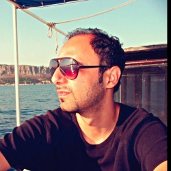

![Site logo: a green pine]()
Alfonso Crisci
Front-end Web Developer
Getting to know me
- Born: Italy, 1979
- Living: Budapest, Hungary
- Busy doing: Front-End Support Engineering, Gardening, Cooking
- Languages: Java, Javascript, Liferay, VBA

Hi ! I am Alfonso, technology is my passion. With Front-End, it was love at first sight. I learned to code in BASIC in the early '90s, when HTML pages used to be quite funny.
Make yourselves comfortable, explore the site and enjoy it !
Featured Work
Green leaves
https://github.com/udacity/greenleaves

Tofino
https://github.com/udacity/tofino

Hiking
https://github.com/udacity/hiking